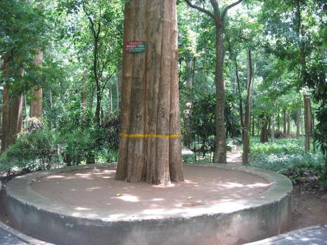

Nilambur Teak Museum

Teak Museum
Kerala has had a long association with teak and has always played a central role in its cultivation and trade. The word teak itself is said to have come from the Malayalam word 'theku'. The Teak Museum in Nilambur celebrates this ancient relationship and takes one on a special journey through history, chronicling teak and its importance in our culture.
Teak is still the most sought after form of timber. The museum was made of the sub-centre of Kerala Forest Research Institute (KFRI) in 1995. Teak is extremely significant in the area. The world's first Teak (Tectonagrandis) plantation was raised in Nilambur way back in the 1840s and is among the premier teak plantations in the world. Visitors come here in large numbers and are greeted by the extensive root system of a 55-year-old teak tree in the portico.
The ground floor of the facility is dedicated to research on the Kannimara Teak. The teak plantation nearby is host to this great tree which is the oldest of its kind in the world. It is an integral part of the region’s history and we get a detailed account of the bark, flower and fruit of the teak. We alsocatch a glimpse into the teak plantation activities undertaken 160 years ago. Some of the other attractions here are the traditional granary and a miniature model of a sailing vessel called Uru, made of teak wood.